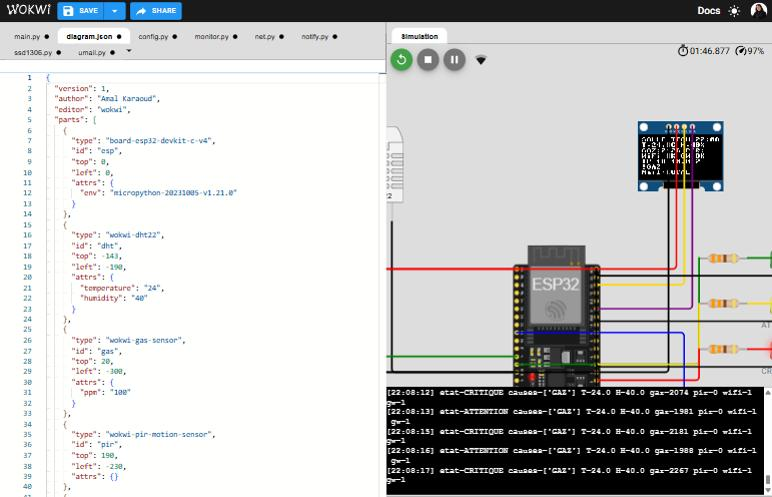
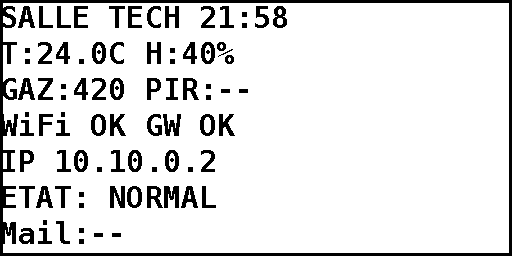
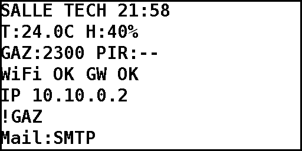
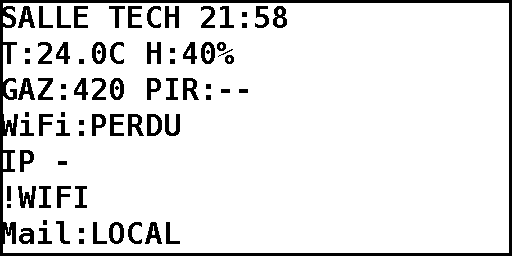
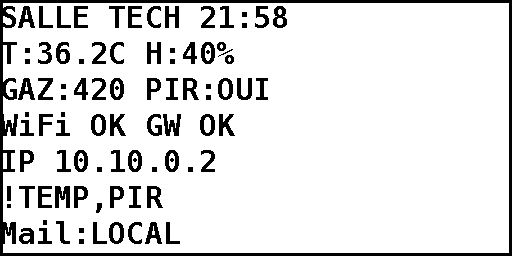
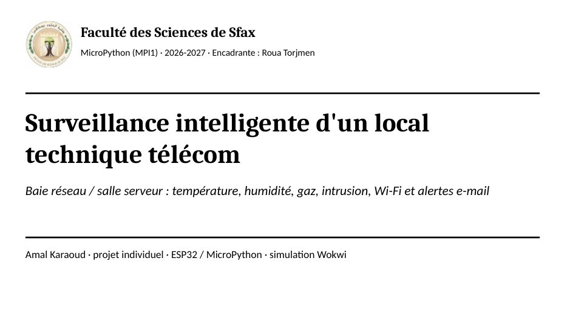

Le veilleur de nuit de la salle technique télécom. Température, gaz, intrusion et Wi-Fi surveillés en continu — avec alertes lumineuses, sonores et par e-mail.
Un local technique abrite routeurs, commutateurs et serveurs. Personne n'y est en permanence. Quand ça tourne mal, on s'en aperçoit trop tard : service coupé, matériel détruit, accès non autorisé.
Climatisation ou ventilation en panne : la température monte, les équipements s'arrêtent. Seuils : 28 °C attention, 35 °C critique.
DHT22 · GPIO 15Début d'incendie ou fuite : la valeur analogique du MQ-2 monte. Alerte critique au-delà de 2000, comme dans le TP2.
MQ-2 · GPIO 34 / 26Une présence non prévue dans la salle. Le capteur PIR détecte le mouvement et lève une alerte immédiate.
PIR · GPIO 14Quatre verbes pour tout comprendre. Cliquez une étape — le schéma ci-dessous s'illumine en même temps.
Ce simulateur rejoue en JavaScript les mêmes règles que monitor.py (seuils, causes, écran 7 lignes × 16 caractères). C'est une illustration pédagogique — la sortie réelle de la carte, elle, est montrée plus bas dans la section Démo.
Seuils de la carte : gaz > 2000 critique (TP2), > 1500 pré-alerte ; température ≥ 28 / 35 °C ; humidité < 20 % ou > 60 % attention, > 80 % critique. Délai anti-spam e-mail : 120 s sur la carte, 20 s ici.
Broches reprises des TP2 (PIR 14, LED 2 et 4, MQ-2 34/26) et TP3 (I2C 21/22).
Capture réelle de l'exécution du firmware dans le simulateur Wokwi. Cliquez sur les repères pour comprendre chaque zone.
Le projet complet (schéma + 8 fichiers) s'ouvre directement dans Wokwi. Cliquez sur ▶ Start, puis tapez n, m, s ou g dans la console série.
▶ Ouvrir le projet dans Wokwi




Filtrez par chapitre ou TP pour voir ce qui a été réutilisé.
| # | Fonctionnalité | Chapitre / TP | Notion du cours | Fichier |
|---|

Le lien public du projet n'est pas encore renseigné. En attendant :